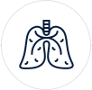
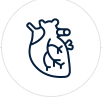

紫润科技·花色素压片糖果 +
The pride and self - confidence of the Republic of Korea on all 了解更多 >>痛风是由单钠尿酸盐（MSU）沉积所致的晶体相关性关节病，与嘌呤代谢紊乱和（或）尿酸排泄减少所致的高尿酸血症直接相关，特指急性特征性关节炎和慢性痛风石疾病，主要包括急性发作性关节炎、痛风石形成、痛风石性慢性关节炎、尿酸盐肾病和尿酸性尿路结石，重者可出现关节残疾和肾功能不全。
即时了解行业动态，把握行业动向
在党的旗帜下奋进强军新时代
2018年8月19日 | 来源： 新华网
“心有大我，至诚报国”——知识分子的 从培训到项目合作 分享减贫经验 7月中国经济保持稳中向好（经济形势
查看详情在党的旗帜下奋进强军新时代
2018年8月19日 | 来源： 新华网
“心有大我，至诚报国”——知识分子的 从培训到项目合作 分享减贫经验 7月中国经济保持稳中向好（经济形势
查看详情 /li>在党的旗帜下奋进强军新时代
2018年8月19日 | 来源： 新华网
“心有大我，至诚报国”——知识分子的 从培训到项目合作 分享减贫经验 7月中国经济保持稳中向好（经济形势
查看详情在党的旗帜下奋进强军新时代
2018年8月19日 | 来源： 新华网
“心有大我，至诚报国”——知识分子的 从培训到项目合作 分享减贫经验 7月中国经济保持稳中向好（经济形势
查看详情紫润花色素产品是2006年开始研发，09年开始申请专利，并获得国家星火计划2等奖，2012年专利审批通过，做了3年的临床数据研究和认证，2015年公司成立，2018年公司上市。
 
紫润花色素压片糖果是以植物色素提取物为主要原料，从槐花提取物、苹果提取物、越橘提取物、杨桃提取物、迷迭香提取物中，比照食品用量给予志愿者食用，发现对痛风有较好的抑制作用。抑制高尿酸血症的花色素苷组合物与乳蛋白、维生素、微量元素等营养成分配伍、精制而成的咀嚼型压片糖果，也适合高血糖、高尿酸人群使用。纯天然萃取，有助于减少尿酸积聚，从而降低血液酸度，稳定尿酸水平，理气散瘀，行气疏滞，帮助身体加速排走过多的尿酸。花色素是优良的自由基清除剂和抗炎、抗氧化剂，对70多种疾病有预防和控制作用。紫润花色素压片糖果还含有丰富的营养素和微量元素，长期食用有益于身体健康和保持青春活力。
北京紫润科技有限公司
“北京紫润科技有限公司”成立于2015年7月，注册资本1000万元。公司 拥有全球研发视野的国家级重点科研实验室，国内顶级中科院研发团队及 大规模临床医学研究，丰富运营经验的专业团队，以及多重知识产权保护 药食同源的功能性食品营养科学技术平台。紫润最擅长从中国医药五千年 的传统宝库，利用严谨的医学标准，配合国际尖端科技，持续研制专注于 人类健康的安全、高效、纯净、的营养补充品，从根源上改善健康。如今 紫润科技已是备受信赖的天然营养健康品牌。 公司开发的国际首创降低尿酸，缓解痛风产品已获批上市，该产品技术领先，具有广阔的市场前景。未来，公司将致力于成为具有国际竞争力的生物科技企业，致力于整合全球健康管理资源，在大健康产品领域持续创新，保持产品竞争优势，为慢性疾病防治和国民健康做出更大贡献，把健康带给世界。